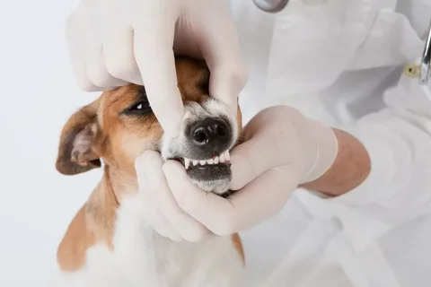
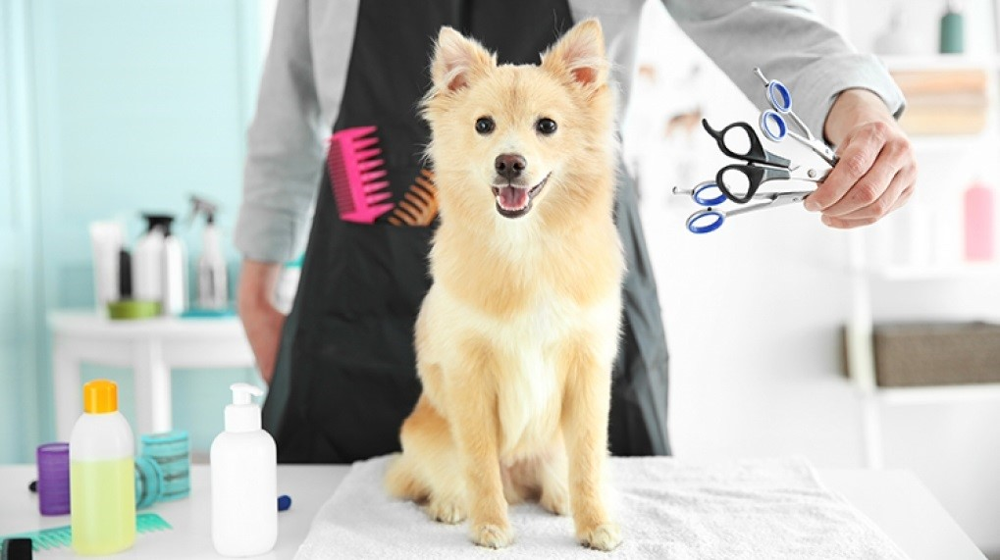

Наши Услуги
Мы предлагаем широкий спектр услуг для животных всех пород и возрастов, гарантируя индивидуальный подход и высокое качество лечения.
Хирургия
Хирургические операции
Плановые и экстренные операции, травматология, ортопедия.

Стоматология
Профессиональная чистка зубов, лечение заболеваний полости рта.
Уход и Гигиена

Уход за животными
Гигиенические процедуры, стрижка когтей, чистка ушей, тримминг.

Вакцинация
Комплексные программы вакцинации для защиты вашего питомца.
Часто задаваемые вопросы
Работаете ли вы круглосуточно? +
Наша клиника работает с 9.00 до 20.00 каждый день.
Какие документы нужно взять с собой на приём? +
Желательно взять ветеринарный паспорт вашего питомца, особенно если необходимо подтвердить предыдущие вакцинации или лечение.
Можно ли у вас купить корма и товары для животных? +
Да, в нашей клинике есть зоомагазин, где вы можете приобрести профессиональные корма, витамины, средства для ухода и другие товары для домашних животных.
Оказываете ли вы помощь на дому? +
Да, наша клиника предоставляет выездные услуги. Вы можете вызвать ветеринара на дом для осмотра, вакцинации или лечения вашего питомца.